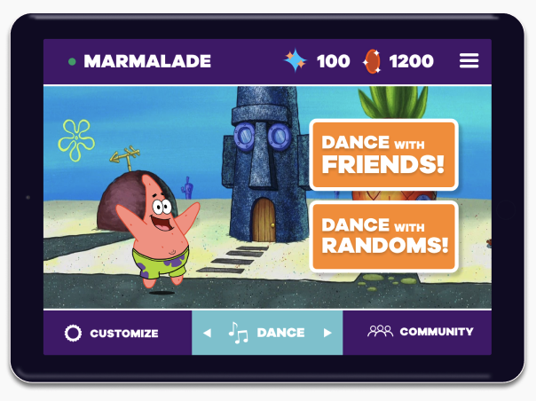

Dance Party
Nickelodeon and Adobe co-hosted a design competition that inspired designers to create an app experience that will help kids feel safe, informed, and connected amid the coronavirus crisis.
Design an Android tablet or Apple iPad app that provides a safe way for kids to communicate, share, and connect with their friends and family.
Kids between 11 to 13 years old (grades 6 to 8)
My team and I explored the internet to gain more information on the physical and emotional problems middle schoolers face. After analyzing several online articles and resources, we compiled a list of the key problems middle schoolers tend to encounter. To summarize our findings, we learned that middle school kids must find productive ways of coping with the stress of dealing with the overwhelming amount of physical, academic, and social changes during this life stage.
I interviewed a middle schooler to learn more about the problems they face while stuck at home and the activities they like to do during their free time. The key insights we gained from this interview was that middle schoolers are being less physically active and it’s challenging for them to stay connected with their friends. Also, middle schoolers enjoy Tik Tok, world building games, and card collecting games.
How might we design a fun iPad app experience that allows middle schoolers to connect with friends and family while at home?
We did a 15 minute brainwriting activity, followed by a discussion on organizing and narrowing down our ideas.
Dance Party is a dance battle game that allows players to compete against friends and players around the world in quick dance challenges. They can choose from a variety of Nickelodeon characters to be your dance model. Your dance model will be calibrated to match your body movements so that when you’re performing your best dance moves, your dance model is mimicking your every move. Through this experience, players can safely express themselves through their Nickelodeon character (also, who doesn’t want to watch SpongeBob doing the newest TikTok dance trends). In addition to dance challenges, you can connect with friends and other dancers around the world through sharing your favorite dance battle replays. We also allow players to customize their profile with different Nickelodeon characters and unique backgrounds. Overall, this game will keep middle schoolers safe, active, and connected with their friends and family.
- - Build the interaction for the character customization feature
- - Add animations to make the prototype more lively and interactive
- - Design and develop the share videos feature
- - Further develop the calibration screens
Overall, I am proud of our final prototype. Since the concept of the game is very interactive, it was challenging to create a fully developed prototype that conveyed our idea within the time frame of the competition. Also, my team and I decided to take a minimal approach to the research phase for this competition. This minimal approach may have led to a limited mindset when addressing the Nickelodeon challenge. Despite these challenges, I developed my interaction design skills, learned the value of having a thorough research process, and had a fun experience collaborating with other designers.